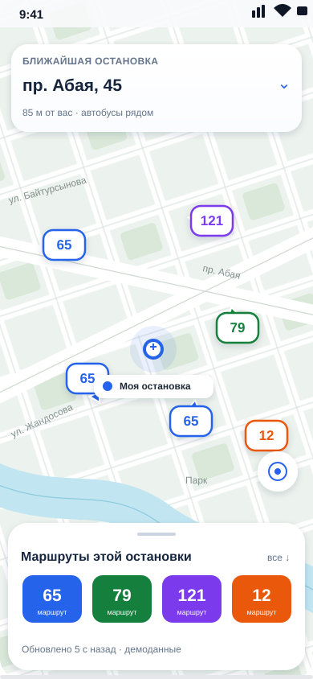

ONAY Free
Автобусы у моей остановки
Главный объект — остановка. Главный экран — карта. На карте сразу видны автобусы только тех маршрутов, которые обслуживают выбранную остановку.
Нажмите на номер 65, чтобы выделить его автобусы. Нажмите на название остановки, чтобы переключить сторону дороги или выбрать другую.
Рабочий Android-код не затронут. В прототипе нет живого API, достоверного ETA и авторизации.

Выбрать остановку
Автобус 65
На карте показана демонстрационная позиция. В реальной версии будет время последнего обновления.